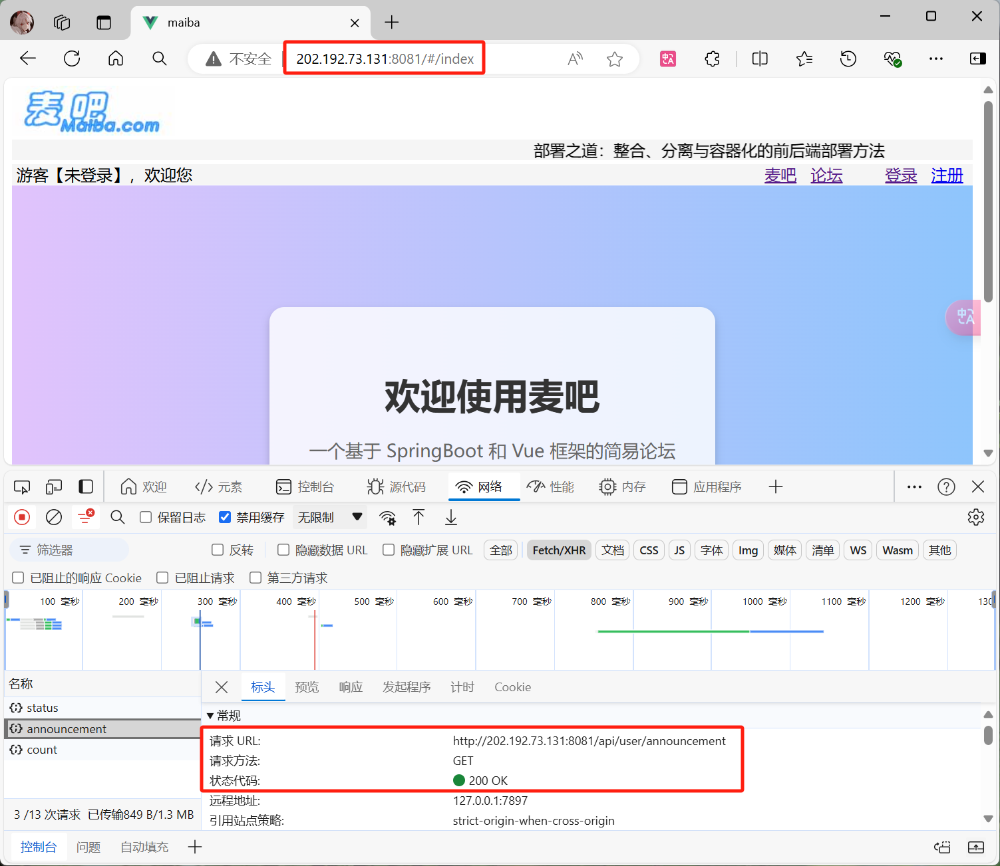
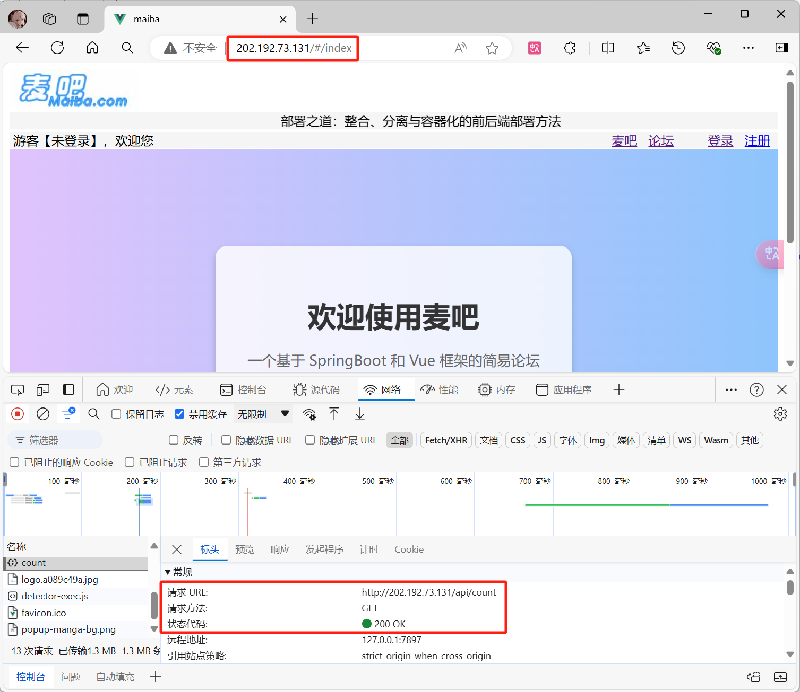

部署之道：整合、分离与容器化的前后端部署方法
将 Vue打包文件直接集成到后端部署
这里使用我的大二课程作业给大家在 Windows 下演示将 Vue打包文件直接集成到后端部署
配置前端构建输出
打开你的 Vue 项目，在终端中输入npm run build命令，直到看见Build complete.说明打包完成

打包完成后你会在目录中看见一个dist文件夹，里面会有index.html文件和css、img、js等文件夹

将 dist 中文件复制到后端项目中
假设你的后端项目使用的是Spring Boot，你需要将dist文件夹中的内容复制到src/main/resources/static目录下。这个目录是Spring Boot默认的静态资源文件目录。
配置后端服务器以服务静态文件
如果是 Spring Boot 项目，确保在application.properties或application.yml中有以下配置，这会告诉Spring Boot在处理请求时，会首先在static目录下查找匹配的静态资源
1 | spring: |
部署与测试
项目的启动可以直接使用 IDE 启动，也可以打包成 Jar 包后命令启动，这里直接使用一键启动
访问自己电脑的 IP 地址或者使用localhost都可，访问 Spring Boot 设置的后端端口，能看到前端页面和请求状态码200说明成功
在这种方式下，你只需要启动后端服务即可实现前后端部署
使用 Nginx 反向代理实现前后端分离部署
这里使用我的大二课程作业给大家在Windows下演示使用 Nginx 反向代理实现前后端分离部署
配置前端构建输出
打开你的 Vue 项目，在终端中输入npm run build命令，直到看见Build complete.说明打包完成
打包完成后你会在目录中看见一个dist文件夹，里面会有index.html文件和css、img、js等文件夹
将dist整个文件夹复制到 Nginx 根目录下的html文件夹中，同时可以修改文件夹为你需要的名字，我这里就叫maiba好了

设置 Nginx 反向代理
打开conf目录下的nginx.conf文件夹，修改配置，注意修改为自己对应的文件夹名和后端服务地址
1 | worker_processes 1; # 定义工作进程数量 |
在server中listen 80，表示服务器监听 HTTP 的 80端口，这是默认的 HTTP 端口。
在 location / 中，定义了网站的根目录 html/maiba 和默认首页文件 index.html，这是静态资源的主要入口。
而 location /api/ 通过 proxy_pass 把 API 请求转发到后端服务http://localhost:8081，实现前后端的通信。
部署与测试
项目的启动可以直接使用 IDE 启动，也可以打包成 Jar 包后命令启动，这里直接使用一键启动
访问自己电脑的 IP 地址或者使用localhost都可，由于 Nginx 中配置的是80端口，所以直接访问 IP 地址或者localhost即可，无需特意输入端口，能看到前端页面和请求状态码200说明成功
在这种方式下，你需要同时运行 Nginx 和后端项目
通过 Docker 实现前后端的容器化部署
在传统的部署方式上，我们需要自己在服务器一个个安装并配置需要的环境，非常麻烦，主要核心体现在三点：命令太多了，记不住、软件安装包名字复杂，不知道去哪里找、安装和部署步骤复杂，容易出错。
而Docker就能很好的解决这个问题，即便你对Linux不熟悉，你也能轻松部署各种常见软件、Java项目。
如果你需要查看Docker的基础知识，可以访问后端开发入门Docker：从基础到实践
如果你需要我使用的终端工具，可用访问Tabby：一款出色的开源终端工具
这里使用我的大二课程作业给大家在 CentOS 7 下演示通过 Docker 实现前后端的容器化部署，同时开启Nginx、MySQL、Redis等服务
如果不使用 Redis 可以省略对应的步骤，并且注意在 Compose 文件中去掉 Redis 的配置
Linux系统中创建目录
在root目录下创建文件夹，用于本地目录挂载
- 创建maiba文件夹（自定义名称，这里使用项目名），用于存放所有文件
- 在
maiba文件夹中创建三个文件夹nginx、mysql、redis
- 其他文件等我们配置好，在后面的步骤再单独放入
前端构建
打开你的 Vue 项目，在终端中输入npm run build命令，直到看见Build complete.说明打包完成
打包完成后你会在目录中看见一个dist文件夹，里面会有index.html文件和css、img、js等文件夹
将dist文件夹名改为自定义名称（这里使用 maiba ），放入创建好的nginx文件夹中的html文件夹中

Nginx基本配置
准备nginx.conf文件，设置与本地部署基本一致，但是需要注意：
网站根目录设置需要设置你的文件夹名，且路径是Docker容器中的路径（已挂载到本地
html文件夹）服务器名称和后端的服务地址不再使用
IP，而是使用Docker中自定义桥接网络的名称（这里使用maiba）
1 | worker_processes 1; # 定义工作进程数量 |
将准备好的nginx.conf文件放入nginx文件夹，与html文件夹并列

后端打包
- 在项目
pom.xml文件中修改配置，避免出现no main manifest attribute错误，找到<plugin>下的<configuration>标签
1 | <configuration> |
- 检查确保在
application.properties或application.yml中关于MySQL和Redis的配置正确- 使用我们设置的自定义的桥接网络名（这里用maiba）代替
localhost - 使用
redis作为 redis 的 host （在后面的 Docker Compose 文件中，Redis 服务的名称是redis）
- 使用我们设置的自定义的桥接网络名（这里用maiba）代替

- 在IDEA右侧的Maven工具栏中点击
package打包，这时候会在target文件夹中看到一个jar包
- 复制
jar包，修改成自定义名字（这里使用 maiba ），将其发送到Linux中的maiba根目录下
准备 Dockerfile
- 准备
Dockerfile文件，将其中的jar包名修改成自己的（这里为maiba）
1 | # 基础镜像 |
- 确保
Dockerfile被放在你的项目根目录下（这里为maiba），与jar包要在一个目录，因为Dockerfile文件中使用了相对路径
放入MySQL和Redis的初始化文件
- 在MySQL文件夹中创建两个文件夹
init和conf
- 在
init文件夹中放入你的sql文件，这样在MySQL容器创建的时候，你的数据库就创建好了 - 在
conf文件夹中放入一个简单的maiba.cnf文件（名字自定义，这里叫 maiba ），简单设置一下字符集
1 | [client] |
- 确保 mysql 文件夹中的两个文件夹中文件都正确放置
在
redis文件夹中放入准备好的dump.rdb文件和redis.conf文件前者为你需要初始化的的Redis数据，由Redis生成，找到复制过来即可
后者为redis的配置文件，注意需要设置
daemonize为no，否则会出现redis启动后又正常退出的问题
在 Docker 容器中运行 Redis 时，不需要设置
daemonize为yes。原因是 Docker 容器本身就是一个单独的进程，如果 Redis 容器以守护进程模式运行，会导致容器立即退出。
- 守护进程模式：当
daemonize yes时，Redis 会在后台运行，并且主进程会退出。而在 Docker 中，主进程的退出意味着容器的退出。- 前台运行：Docker 容器的最佳实践是让主进程在前台运行，以便 Docker 可以管理进程生命周期。
- 确保redis文件夹中的两文件都正确放置
创建 Docker Compose 文件
- 创建
docker-compose.yml文件，输入下面内容
1 | version: "3.8" |
我们四个容器都使用了自定义桥接网络
maiba，所以在之前的Nginx配置文件和后端连接MySQL的配置中我们都使用了maiba代替需要注意密码等设置要和自己在后端的Properties中配置的一致，端口也根据需要进行设置
并且我们都对容器挂载了本地目录，可以实现数据的永久保存
- 确保
docker-compose.yml被放在你的项目根目录下（这里为maiba）

构建和启动 Docker 容器
前面的步骤做完，确保好文件都放置正确了，我们终于可以一键构建容器并运行了
- 在终端中使用
cd ~回到 root 目录，运行cd maiba进入项目文件夹，运行docker compose up -d，完成所有的容器创建
- 第一次运行，会根据 Dockerfile 文件生成 maiba 后端容器镜像（蓝色部分），其他镜像如果曾经
docker pull过，则无需下载，省时 - 然后就会依次创建所有容器，并挂载到我们指定的目录，并加入相同的网络(与Nginx中配置的和后端配置的相同)

- 执行
docker ps查看到所有容器都启动成功并且显示端口，证明正常创建

- 执行
docker network inspect maiba，查看该网络，可以看到四个容器都添加到了同一网络中
如果遇到了失败的情况，可以执行
docker logs container_name查看具体错误并解决它即可
部署与测试
所有容器正常启动，在浏览器中输入Linux系统的 IP 地址或云服务器的地址访问，能看到前端页面和请求状态码200说明成功了（注意开放Nginx的端口）

Navicat中也可以访问MySQL和Redis中的数据，说明数据根据sql和rdb文件也初始化成功（需开放服务器的MySQL和Redis端口，才能远程访问）

总结
本文档详细介绍了三种前后端部署的方法：集成dist文件到后端、使用Nginx反向代理实现前后端分离部署，以及使用Docker容器化部署。每种方法都提供了具体的步骤和技术细节，帮助读者理解如何有效地部署应用程序。
对于集成dist文件到后端的方法，文档演示了如何在Vue项目中构建前端代码，并将构建产物集成到Spring Boot后端项目中，通过简单的后端配置就能实现前后端的集成部署。
使用Nginx反向代理的方式，则实现了前后端的分离部署。通过配置Nginx服务器来代理前端静态资源，并将API请求转发给后端服务，这种方式能够更好地解耦前后端，便于维护和扩展。
最后，文档深入讲解了如何利用Docker进行容器化部署。不仅涵盖了前端构建、Nginx配置，还详细说明了如何准备Dockerfile、配置MySQL和Redis的初始化文件，以及如何使用Docker Compose文件来编排多个服务容器，包括后端应用、数据库、缓存服务等，从而实现一键式的自动化部署流程。
通过这些方法，开发者可以根据项目的实际需求选择最合适的部署策略，无论是简单的集成部署还是复杂的多服务容器化部署都能应对自如。
双 手 合 十 成 为 自 己 的 神
自 己 所 信 念 的 即 是 信 仰

微 信 号 ： L I J J J W E I
Q Q 号 ： 2 8 4 8 5 2 7 4 8 5